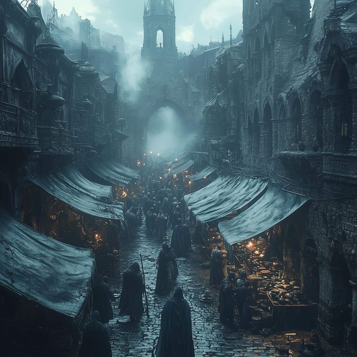

Every shutter stays closed. Alone and unannounced, you become a rumor with a blade.

Theme
Act III - Stealth Path
Every shutter stays closed. Alone and unannounced, you become a rumor with a blade.
